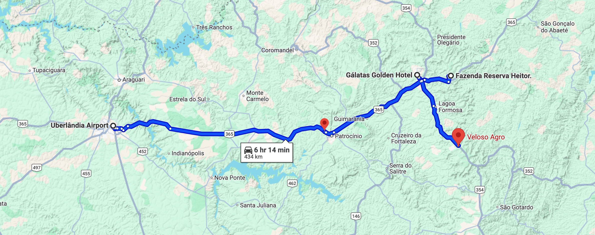

Roteiro Nespresso
Visita às Fazendas Reserva Heitor, Santa Cecilia e Expocacer no Cerrado - Julho 2025
Convidados: Francisco Nogueira, Mariana Marcurssi, Daniel Motyl, Edisom Machado, Daniel Wolthers e AAA Nespresso Team
Motorista: Daniel Wolthers | Carro: Jeep Wrangler
Carro: Jeep Wrangler
Motorista: Daniel Wolthers |
Mapa do Roteiro - Fazendas no Cerrado

Domingo, 6 de Julho de 2025
17:50
Vôo LATAM para Uberlândia (GRU - UDI)
19:00
Chegada em Uberlândia, 3 horas de viagem para hotel em Patos de Minas
22:00
Check-in Galatas Golden Hotel seguido por jantar
Segunda-feira, 7 de Julho de 2025
08:30
Viagem para Fazenda Heitor
09:00
Visita Fazenda Heitor - Anfitriões: Marcus e Mariana Heitor (pai e filha) + AAA Regen Consultant Gabriel Oliveira & AAA Social Consultant Kamila Cortês
13:00
Almoço na fazenda
14:00
Viagem para Veloso Agro (1h15min)
15:30
Apresentação e reunião com Manoel Veloso e Pedro Henrique Veloso + possível visita rápida ao armazém/dry mill
19:30
Jantar e pernoite na casa sede
Terça-feira, 8 de Julho de 2025
08:00
Visitar lavoura com Manoel Veloso, Pedro Henrique Veloso, Gabriel Oliveira e Kamila Cortês
10:15
Partir para Patrocínio (2 hrs)
12:00
Almoço no restaurante Jamaica com Expocacer - Anfitriões: Simão, Farlla, Ítalo e Cláudio
13:00
Reunião para apresentação da Expocacer
14:00
Visita no armazém 01 e 02
15:30
Deslocamento para Uberlândia com motorista da Expocacer
Daniel W. dirige de volta para Santos
Daniel W. dirige de volta para Santos
20:05
Vôo para São Paulo (Francisco, Daniel M. e Mariana)
Fim da Viagem / End of Coffee Trip